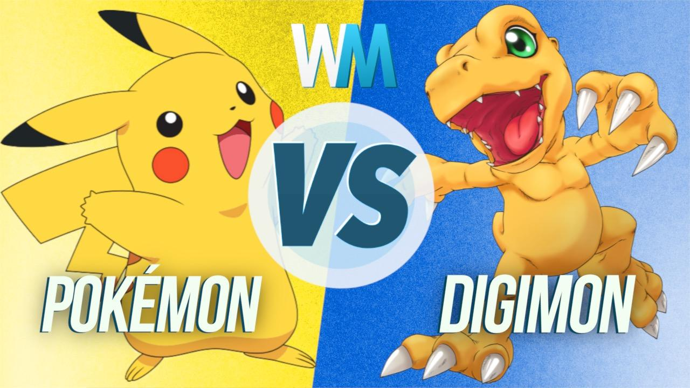

The Rise Of Monster-Catching Video Games
Published:Sep 25, 2023
Author:John Doe
“Gotta Catch ‘em All” is a phrase that was developed for a 1996 Game Boy game that quickly spiraled into an official motto that would eventually help shape a unique subgenre of role playing games. Originally, this phrase was designed for marketing the latest game at the time, Pokémon Red and Blue, it soon became a global phenomenon. More specifically, it would further encapsulate a type of gameplay idea that would go on to directly affect an entire subgenre of role playing games. Monster catching games are often identified by its core gameplay loop of the discovery, capturing, and the utilization of creatures in combat or progression. This particular approach to RPG mechanics has since expanded over time. Ultimately becoming a catalyst for many other similar games. As a result, Pokémon games have inadvertently inspired countless adaptations, iterations, innovations, and even evolutions of the mechanic.While more traditional RPGs usually emphasize a fixed party member line up and straightforward storylines, Pokémon games have instead flipped this narrative and taken the monster catching RPG to center around randomness, collection, customization and overall increased player agency through catching. From games such as Digimon and Yu-Gi-Oh! To more modern hybrids of the mechanic like Wuthering Waves and Palworld, the genre has become greatly diversified through each game’s iteration and implementation of the sub genre.Popular Games
| Game | Peak Year | Players (Millions) |
|---|---|---|
| Pokemon | 2016 | 100 |
| Digimon | 2001 | 30 |
| Palworld | 2024 | 20 |